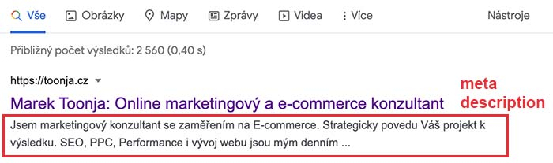

Jak psát meta description, které funguje
Pokud to s organickým vyhledáváním myslíte vážně, meta description budou jednou z vašich největších zbraní. Ale jen v případě, že jsou napsaná správně. Jejich správné otextování doslova láká k prokliku.

Co je meta description
Meta description je 150-160 znaků dlouhý text, který vysvětluje obsah stránky, skrývající se za ním. Jeho hlavní funkcí je pomoci uživatelům se rozhodnout, zda na váš web mají jít nebo ne. Jde tak o důležitý faktor, který ovlivní pozici webu ve vyhledávání, který byste v žádném případě neměli ignorovat. A pokud se zajímáte o SEO copywriting, čtěte!

Proč je meta description tak důležité?
- Láká k prokliku. Ve výsledcích vyhledávání je toho habaděj. Přestože se zobrazíte na první pozici, potřebujete zaujmout.
- Nepřímo ovlivňuje pozici stránky ve vyhledávání. Souvisí s bodem výše. Můžete být na první pozici ve výsledcích vyhledávání, ale stránka na druhé pozici přiláká více návštěv díky meta description. Tím pádem se nejspíš brzy posunute pod ní.
- Meta description také návštěvníkovi napovídá, co na dané stránce najde. Pokud to tam nenajde a vrátí se kliknout na jiný výsledek, zase máte černý puntík!
- Jestliže jste nedefinovali speciální Open Graph značky, meta description je také text, který se zobrazí při nasdílení na sociálních sítích.
- Protože Google ho doporučuje. A Google moc dobře ví, co chce.
Update: Google se může i přes váš vyplněný meta description rozhodnout, že nevyhovuje hledanému dotazu a místo toho zobrazí jinou část textu z obsahu stránky. To může být dobrá i špatná zpráva. Určitě však doporučuju mít co nejvíce věcí pod kontrolou a mít meta popisek co nejvyšperkovanější.
Tipy pro psaní meta description
1. Pište pro uživatele, ne pro vyhledávač
Tenhle text se zobrazuje opravdovým lidem. To oni rozhodnou o jeho úspěchu. Myslete na toho, kdo klíčové slovo ve vyhledávači hledal. Čím ho zaujmete?
2. Nezapomeňte na klíčové slovo
Hledané klíčové slovo se totiž v meta popisku vytuční. Tím daleko více upoutá oko uživatele. Navíc tím dáváte alespoň slabou indicii Googlu, o čem ta stránka je. A pro menší vyhledávače jde o jeden z ranking faktorů.
3. Přidejte výzvu k akci
Klikněte, podívejte se, naučte se… Tyhle a podobné fráze pomáhají porozumět uživatelům, co stránka nabízí. Zároveň je pobízí k akci.
4. Popište hodnotu cílové stránky pro uživatele
Řekněte uživateli, co návštěvou stránky získá. Jde například o slova jako: naučíte se, dozvíte se, prozradíme. Velkou sílu ale mohou mít i přídavná jména: nejlepší, největší a mnohá další “nej” relevantní k vaší stránce.
5. Podívejte se na ostatní. A buďte jiní!
Testujte. Není nic snadnějšího, než vložit klíčové slovo do vyhledávače a podívat se, jakými meta tagy lákají k prokliku ostatní. Odlište se.
6. Nekopírujte meta description
Ani od ostatních webů, ani mezi stránkami vlastního webu. Google by si neměl myslet, že duplikujete obsah. A situace, kdy v SERPu vyjedou dvě stránky se stejným textem je opravdu trapná. Vyhledávač tak může udělat vše proto, aby se tak nestalo. To může bolet.
Chcete být ve výsledcích vyhledávání ještě výš? Nabízím SEO konzultace přímo na míru vašemu webu. Ozvěte se mi.